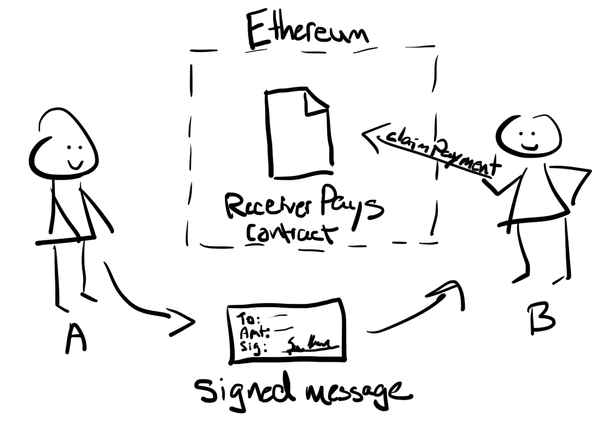

### Create Signature (off-chain) ``` web3Utils.soliditySha3({ { t: "address", v: "0xF4e1E7a435BF80ebdFB2A9E7Bd05A560367d809E" }, { t: "uint256", v: 5000000000 }, { t: "uint256", v: 0 }, { t: "address", v: "0x0ED8f92224E590f827Bf00D0F32CDFa7cDcB4f5b" } }).then((message) => { const pKey = "6192891cafc2a2aaba01eb205e9026ae70a14e568e8664ff04947cad4b1b2449"; const sig = web3.eth.accounts.sign(message, pKey); }) ``` * **messageHash** : signer's address, amount, nonce, recipient * `sign(<data>,<privateKey>)` has built-in support for ECDSA(<a href="https://en.wikipedia.org/wiki/Elliptic_Curve_Digital_Signature_Algorithm" target="_blank">Elliptic Curve Digital Signature Algorithm</a>)
Cheque Cashing

### Verifying Signature (on-chain) ``` function isValidSignature(uint256 amount, uint8 v, bytes32 r, bytes32 s) public view returns(bool) { // this recreates the message that was signed on the client bytes32 hash = keccak256(abi.encodePacked(amount, contractAddress)); bytes32 message = keccak256(abi.encodePacked("\x19Ethereum Signed Message:\n32", hash)); address signer = ecrecover(message, v, r, s); return( signer == sender); } ```
### Cryptographic signature use-cases * Meta-transactions using `Permit()` : <a href="https://eips.ethereum.org/EIPS/eip-2612" target="_blank">EIP-2612</a> * Payment channels * Layer 2 solution * Solution to blockchain scalability Problem * Bitcoin: <a href="https://lightning.network/lightning-network-paper.pdf" target="_blank">7</a> tps * Ethereum: <a href="https://bravenewcoin.com/insights/vitalik-ethereum-en-route-to-a-million-transactions-per-second" target="_blank">15</a> tps * Visa: <a href="https://www.visa.com/blogarchives/us/2013/10/10/stress-test-prepares-visanet-for-the-most-wonderful-time-of-the-year/index.html" target="_blank">47,000</a> transactions per second (tps)
Recommended Resources
Runtime verification
Signing and Verifying Ethereum Signatures
Solidity Inline Assembly
Chain link docs
Provable docs